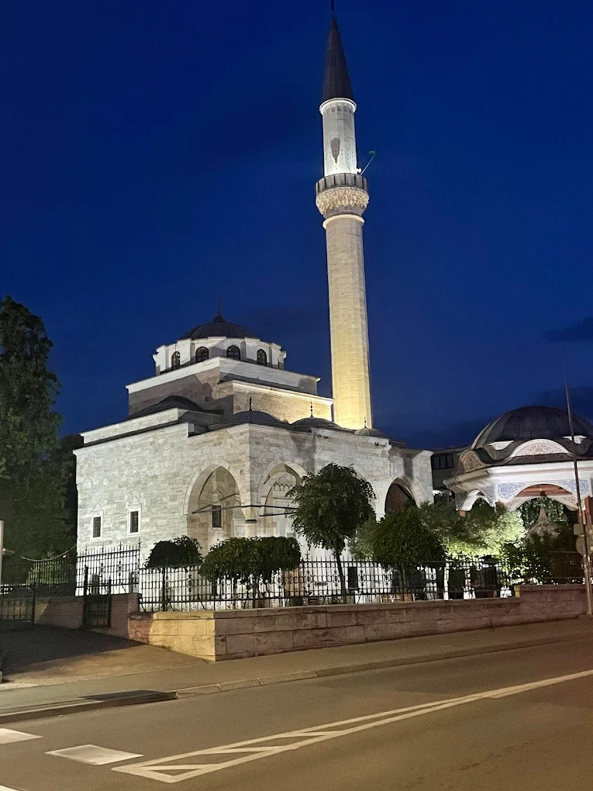
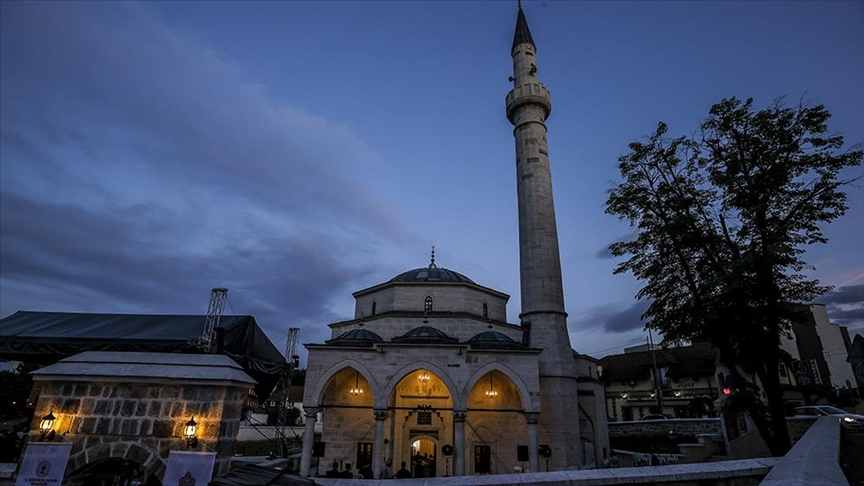

Prayer in Banja Luka
Find prayer times, mosques, and prayer facilities across the city
14 Muharram 1445 AH
Banja Luka, Bosnia
Fajr
03:45
Sunrise
05:20
Dhuhr
12:45
Asr
16:30
Maghrib
19:50
Isha
21:15
Qibla Direction
N
S
E
W
Southeast (135° from North)
Mosques & Prayer Rooms

Main Mosque
Ferhat Pasha Mosque
Beautiful Ottoman-era mosque rebuilt after the war, a symbol of resilience.
City Center
Wudu Facilities
Women's Section

Islamic Site
Arnaudija Mosque
Ottoman-era mosque that was destroyed during war and rebuilt later.
City Center
Wudu Facilities
Women's Section